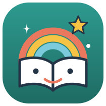

Smart Worksheetby childplayKebijakan Privasi
Diperbarui 9 Oktober 2026 · English version below
Tentang kami
Smart Worksheet (ayokmain.my.id) adalah lembar kerja interaktif untuk anak dari childplay. Pertanyaan tentang privasi: singgih.rochmad@gmail.com.
Data yang kami gunakan
- Tanpa masuk (tamu): bintang tersimpan di perangkat itu saja (penyimpanan browser), tidak dikirim ke kami.
- Masuk dengan Google (opsional): dari akun Google kami hanya menerima nama, alamat email, dan foto profil. Kami tidak mengakses Gmail, kontak, Drive, atau data Google lainnya.
- Bintang per lembar kerja, disimpan di akun supaya bisa dilanjutkan di perangkat lain.
- Permainan suara (Tebak Angka, Huruf, Kata, Nama Hewan): memakai pengenal suara bawaan browser (misalnya layanan Google di Chrome atau Apple di Safari) untuk mengubah ucapan menjadi teks. Mikrofon hanya aktif setelah tombol 🎤 diketuk. Kami tidak merekam atau menyimpan suara; hanya dicek apakah jawabannya benar.
- Puzzle Fotoku: foto yang dipilih tetap di perangkat (disimpan di browser) dan tidak pernah diunggah ke server kami.
- Catatan bermain anonim: lembar kerja yang diselesaikan, jumlah bintang, dan jumlah percobaan, dengan kode perangkat acak (bukan identitas pribadi). Ini membantu kami tahu lembar mana yang disukai dan perlu diperbaiki. Ketukan tombol "Beri dukungan" dan link toko juga dihitung.
- Ulasan (opsional): nilai bintang dan catatan yang Ayah Bunda kirim dari tab Dukung, terhubung ke akun jika sedang masuk. Mohon jangan menulis data pribadi di catatan.
Untuk apa data digunakan
- Nama, email, dan foto hanya untuk membuat akun, menampilkan siapa yang masuk, dan menyimpan bintang di semua perangkat.
- Tidak ada iklan. Data tidak dijual, tidak dipakai untuk iklan atau profil pemasaran, dan tidak dibagikan ke pihak lain, kecuali penyedia layanan yang menjalankan aplikasi: Vercel (hosting) dan Turso (database).
- Penggunaan informasi dari Google API mengikuti Google API Services User Data Policy, termasuk persyaratan Limited Use.
Anak-anak
Smart Worksheet dibuat untuk anak. Level pertama bisa dimainkan tanpa masuk. Masuk dengan Google ditujukan untuk orang tua atau wali. Kami tidak meminta data pribadi lain dari anak.
Cookie dan penyimpanan
Saat masuk, kami memakai satu cookie sesi yang aman (HttpOnly) supaya tetap masuk. Penyimpanan browser dipakai untuk bintang dan pengaturan di perangkat. Huruf (font) dimuat dari Google Fonts.
Menyimpan dan menghapus data
Data akun disimpan selama akun ada. Kamu bisa menghapus akun dan semua datanya kapan saja lewat menu Akun → Hapus akun di aplikasi, atau dengan mengirim email ke alamat di atas. Kamu juga bisa mencabut akses lewat pengaturan akun Google.
Keamanan
Semua koneksi memakai HTTPS. Login Google diverifikasi di server, dan sesi ditandatangani secara digital.
Perubahan
Jika kebijakan ini berubah, tanggal di atas diperbarui.
Privacy Policy (English)
Who we are. Smart Worksheet (ayokmain.my.id) is a set of interactive learning worksheets for children by childplay. Contact: singgih.rochmad@gmail.com.
Data we use. As a guest, stars stay in the browser on that device and are not sent to us. If a parent chooses Sign in with Google, we receive only the account's name, email address and profile picture (scopes: openid, email, profile) — no Gmail, contacts, Drive or other Google data. We store the best stars per worksheet for that account (which also decides which levels are open), and anonymous play records (worksheet finished, stars, number of tries, a random device id), and count taps on the donation button and the shop link. Reviews sent from the Dukung tab (a star rating and an optional note) are stored, linked to the account if signed in.
Voice games. The speaking games use the browser's built-in speech recognition (e.g. Google's service in Chrome, Apple's in Safari) to turn speech into text; the microphone is only on after the 🎤 button is tapped. We do not record or store any audio — the text is only checked against the answer. Photo puzzle. A photo chosen for "Puzzle Fotoku" stays on the device (in browser storage) and is never uploaded to us.
How we use it. Google user data is used only to create the account, show who is signed in, and keep stars across devices. There are no ads; data is not sold, not used for advertising or marketing profiles, and not shared with third parties other than the providers that run the service (Vercel for hosting, Turso for the database). Smart Worksheet's use and transfer of information received from Google APIs adheres to the Google API Services User Data Policy, including the Limited Use requirements.
Children. The app is made for children; the first level works without signing in. Sign-in is intended for parents or guardians, and we do not ask children for any other personal information.
Cookies and storage. A secure, HttpOnly session cookie keeps a signed-in parent signed in; browser storage keeps stars and settings on the device. Fonts are loaded from Google Fonts.
Retention and deletion. Account data is kept while the account exists. You can delete the account and all its data at any time in the app (Akun → Hapus akun) or by emailing us, and you can revoke access in your Google account settings.
Security. All traffic uses HTTPS; Google sign-in is verified on the server and sessions are cryptographically signed.
Changes. If this policy changes, the date at the top is updated.